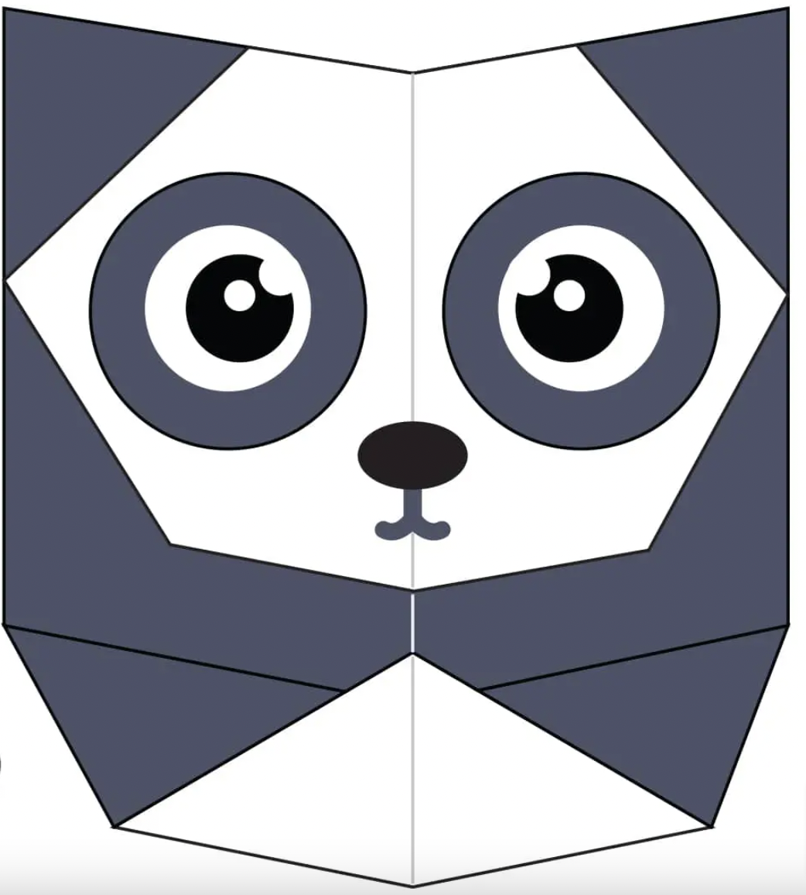

>
>
Fun Facts About Flying Cicadas Most 17 Year Cicadas have red eyes, but they can also have white, gray, blue , or multi-colored eyes. Cicadidae can be found on every continent except Antarctica. Cicadas can't eat or bite because they lack jaws.
Panda Fun Facts About Pandas Pandas go from pink to white and black (or brown). An adult can eat 12–38 kilos of bamboo per day! Giant pandas are good at climbing trees and can also swim. Pandas are "lazy" — eating and sleeping make their day.